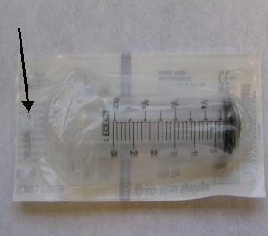

| NOTE: | Syringe should be unused and in original supplier package. Do not use a syringe in an open package; dirt collected on syringe can reduce oil quality and damage connector when operated. |
| NOTE: | Use only Mineral Based Transformer oil. Silicone based oil may damage High Voltage Tank receptacle. |
Illustration 2: Syringe Package
